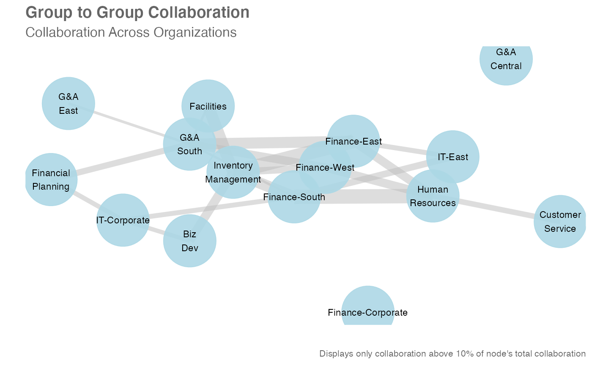
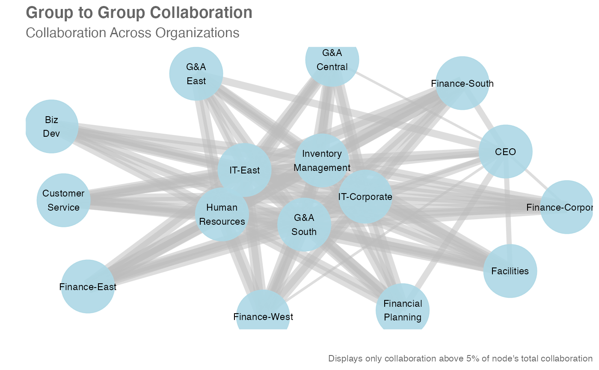
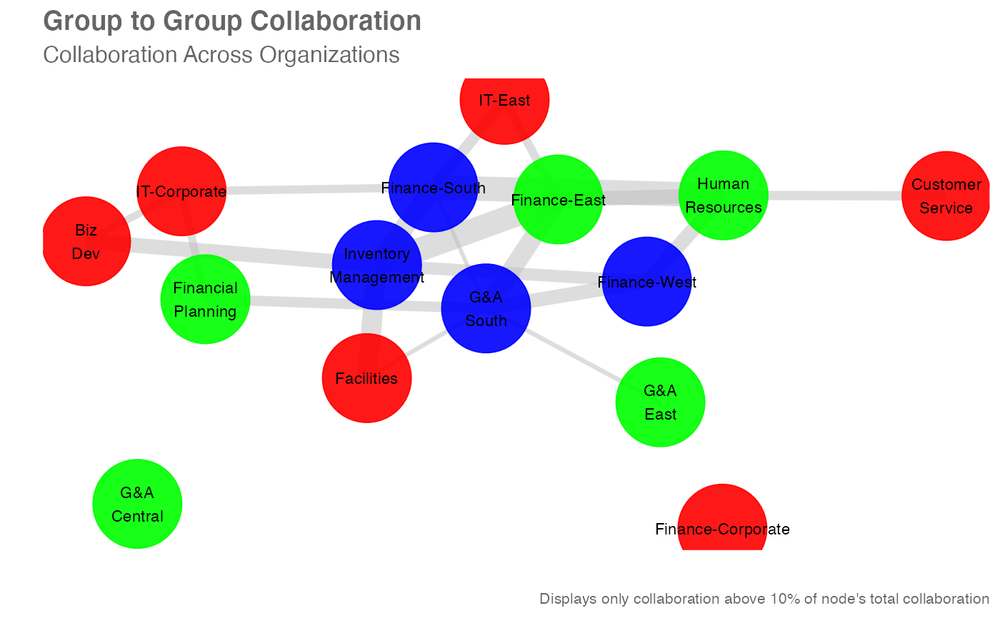

Pass a data frame containing a group-to-group query and return a network
plot. Automatically handles "Collaborators_within_group" and
"Other_collaborators" within query data.
network_g2g( data, time_investor = NULL, collaborator = NULL, metric = "Collaboration_hours", algorithm = "fr", node_colour = "lightblue", exc_threshold = 0.1, org_count = NULL, subtitle = "Collaboration Across Organizations", return = "plot" ) g2g_network( data, time_investor = NULL, collaborator = NULL, metric = "Collaboration_hours", algorithm = "fr", node_colour = "lightblue", exc_threshold = 0.1, org_count = NULL, subtitle = "Collaboration Across Organizations", return = "plot" )
| data | Data frame containing a G2G query. |
|---|---|
| time_investor | String containing the variable name for the Time Investor column. |
| collaborator | String containing the variable name for the Collaborator column. |
| metric | String containing the variable name for metric. Defaults to
|
| algorithm | String to specify the node placement algorithm to be used.
Defaults to |
| node_colour | String to specify the colour to be used for displaying
nodes. Defaults to |
| exc_threshold | Exclusion threshold to apply. |
| org_count | Optional data frame to provide the size of each organization
in the
|
| subtitle | String to override default plot subtitle. |
| return | String specifying what to return. This must be one of the following strings:
See |
A different output is returned depending on the value passed to the return
argument:
"plot": 'ggplot' object. A group-to-group network plot.
"table": data frame. An interactive matrix of the network.
"network: 'igraph' object used for creating the network plot.
"data": data frame. A long table of the underlying data.
Other Network:
external_network_plot(),
g2g_data,
internal_network_plot(),
network_describe(),
network_leiden(),
network_louvain(),
network_p2p(),
p2p_data_sim()
# Return a network plot g2g_data %>% network_g2g()#>#># Return a network plot - Meeting hours and 5% threshold g2g_data %>% network_g2g(time_investor = "TimeInvestors_Organization", collaborator = "Collaborators_Organization", metric = "Meeting_hours", exc_threshold = 0.05)# Return a network plot with circle layout # Vary node colours and add org sizes org_tb <- hrvar_count( sq_data, hrvar = "Organization", return = "table" ) g2g_data %>% network_g2g(algorithm = "circle", node_colour = "vary", org_count = org_tb)#>#># Return an interaction matrix # Minimum arguments specified g2g_data %>% network_g2g(return = "table")#>#>#> # A tibble: 16 x 17 #> TimeInvestorOrg `Biz Dev` CEO `Customer Service` Facilities #> <chr> <dbl> <dbl> <dbl> <dbl> #> 1 Biz Dev 0.494 0.000282 0.00181 0.00170 #> 2 CEO 0.0419 NA 0.0599 0.0720 #> 3 Customer Service 0.00150 0.000569 0.502 0.00225 #> 4 Facilities 0.00148 0.000452 0.00189 0.489 #> 5 Finance-Corporate 0.00178 0.000414 0.00213 0.00287 #> 6 Finance-East 0.00182 0.000376 0.00207 0.00180 #> 7 Finance-South 0.00214 0.000647 0.00173 0.00167 #> 8 Finance-West 0.00166 0.000294 0.00188 0.00180 #> 9 Financial Planning 0.00220 0.000495 0.00225 0.00193 #> 10 G&A Central 0.00163 0.000279 0.00201 0.00213 #> 11 G&A East 0.00172 0.000724 0.00179 0.00161 #> 12 G&A South 0.0506 0.000442 0.0588 0.0577 #> 13 Human Resources 0.0481 0.000202 0.0581 0.0560 #> 14 Inventory Management 0.0485 0.000510 0.0561 0.0591 #> 15 IT-Corporate 0.0525 0.000380 0.0569 0.0571 #> 16 IT-East 0.0502 0.000478 0.0603 0.0584 #> # … with 12 more variables: Finance-Corporate <dbl>, Finance-East <dbl>, #> # Finance-South <dbl>, Finance-West <dbl>, Financial Planning <dbl>, #> # G&A Central <dbl>, G&A East <dbl>, G&A South <dbl>, Human Resources <dbl>, #> # Inventory Management <dbl>, IT-Corporate <dbl>, IT-East <dbl>